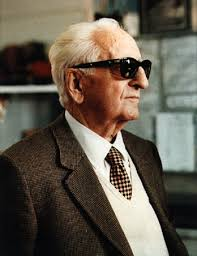
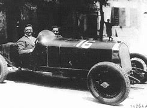

Fundación de Ferrari
Enzo Ferrari nació en Módena, Italia, en 1898, y desde joven mostró una gran pasión por el automovilismo. Durante su juventud, Ferrari comenzó a trabajar como mecánico y luego se unió a un equipo de carreras como piloto. En sus primeros años como piloto, corrió para varios equipos, y su habilidad le permitió destacar en competencias importantes. Sin embargo, a medida que avanzaba en su carrera, Enzo sufrió varios contratiempos, incluido un accidente grave en 1932 que casi le costó la vida, lo que lo llevó a retirarse como piloto.

En 1939, Enzo Ferrari fundó Auto Avio Costruzioni, una empresa que inicialmente se dedicaba a la fabricación de piezas para automóviles. Su primer vehículo bajo esta marca no fue un automóvil de carreras, sino un coche de carretera, el 125 S, que debutó en 1947. Este automóvil fue el primero en llevar el nombre Ferrari y se convirtió en el inicio de una marca que se destacaría por la fabricación de coches de lujo y deportivos de alto rendimiento.

La Scuderia Ferrari y la Fórmula 1 En 1929
Enzo Ferrari fundó la Scuderia Ferrari, que comenzó como un equipo que gestionaba a pilotos privados. No fue hasta 1950 cuando la Scuderia debutó oficialmente en la Fórmula 1. Ferrari rápidamente se consolidó como uno de los equipos más exitosos de la historia de la F1. Durante las siguientes décadas, la Scuderia Ferrari se caracterizó por su dominio en la pista y su enfoque en la innovación tecnológica.

El legado de Ferrari A lo largo de los años
Ferrari logró enormes éxitos tanto en la Fórmula 1 como en la producción de automóviles deportivos de lujo. El famoso Cavallino Rampante (caballo rampante), el logo de Ferrari, se convirtió en un símbolo de exclusividad, velocidad y diseño impecable. La marca también se destacó por la relación entre Ferrari y sus pilotos. Algunas de las leyendas de la F1, como Alberto Ascari, Niki Lauda, Michael Schumacher y más recientemente Sebastian Vettel y Charles Leclerc, han sido pilotos emblemáticos de la Scuderia Ferrari. Además, la compañía fue pionera en la creación de vehículos de alto rendimiento y deportivos como el Ferrari 250 GTO, el Ferrari F40 y el Ferrari LaFerrari, modelos que se han convertido en íconos de la automoción. Enzo Ferrari y su visión Enzo Ferrari siempre fue muy exigente con sus pilotos y su equipo, y tenía una visión muy clara de lo que quería lograr: un automovilismo de alta competencia y una marca asociada con la excelencia. A pesar de ser conocido por su carácter fuerte y a veces difícil, su pasión por el automovilismo y su dedicación al deporte lo convirtieron en una figura legendaria. Ferrari también fue un pionero en el desarrollo de tecnologías innovadoras, siendo uno de los primeros en adoptar el uso de motores V12 en sus vehículos, así como en la producción de coches con una estética y rendimiento inconfundibles
Muerte de Enzo Ferrari
Enzo Ferrari falleció el 14 de agosto de 1988 a los 90 años. A su muerte, dejó un legado imborrable en la historia del automovilismo y de la industria del automóvil. A pesar de su partida, Ferrari sigue siendo una de las marcas más prestigiosas y admiradas del mundo, tanto en las carreras como en la producción de vehículos de lujo. El impacto de Enzo Ferrari en la industria automotriz y en la cultura popular sigue siendo enorme, con su nombre vinculado a la velocidad, la innovación y la pasión por el automovilismo. Su visión sigue viva a través de la Scuderia Ferrari y los coches de la marca, que continúan siendo símbolos de excelencia en todo el mundo.